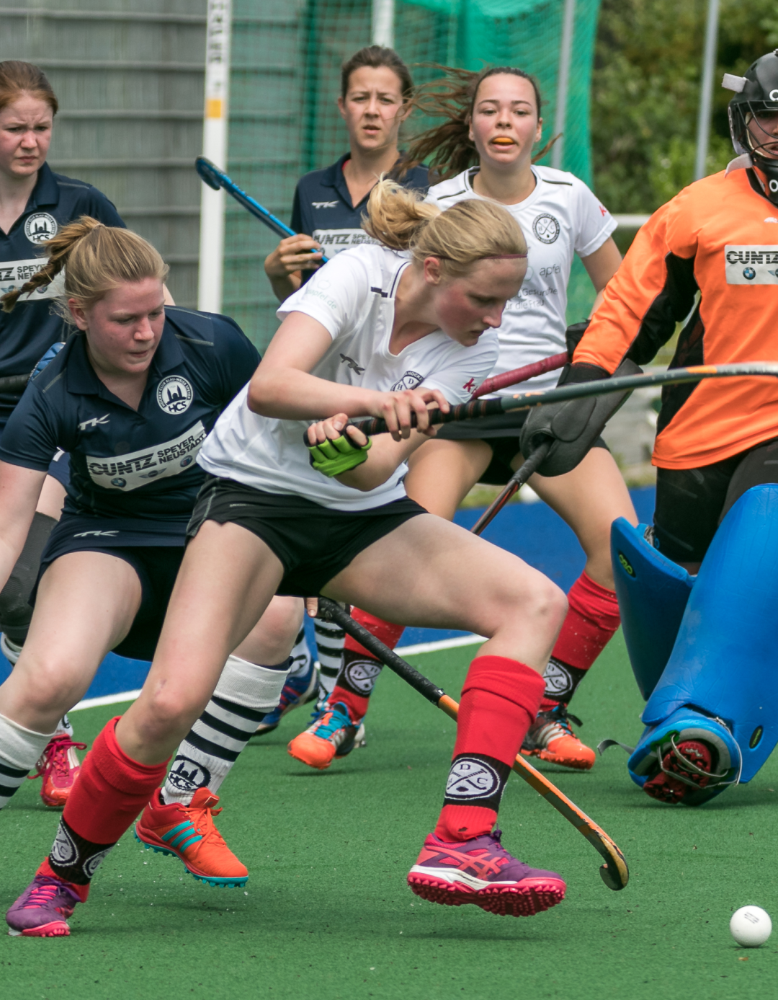
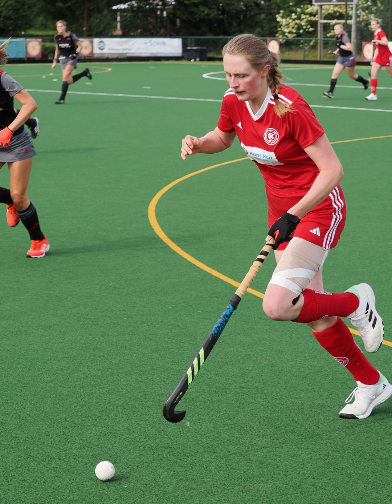
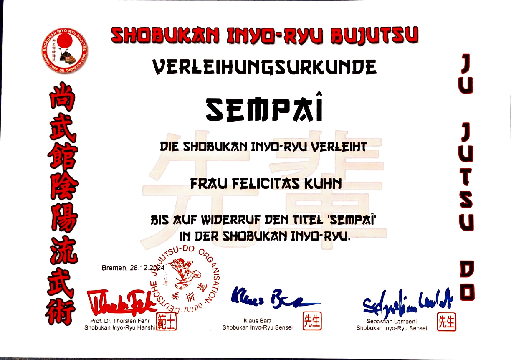
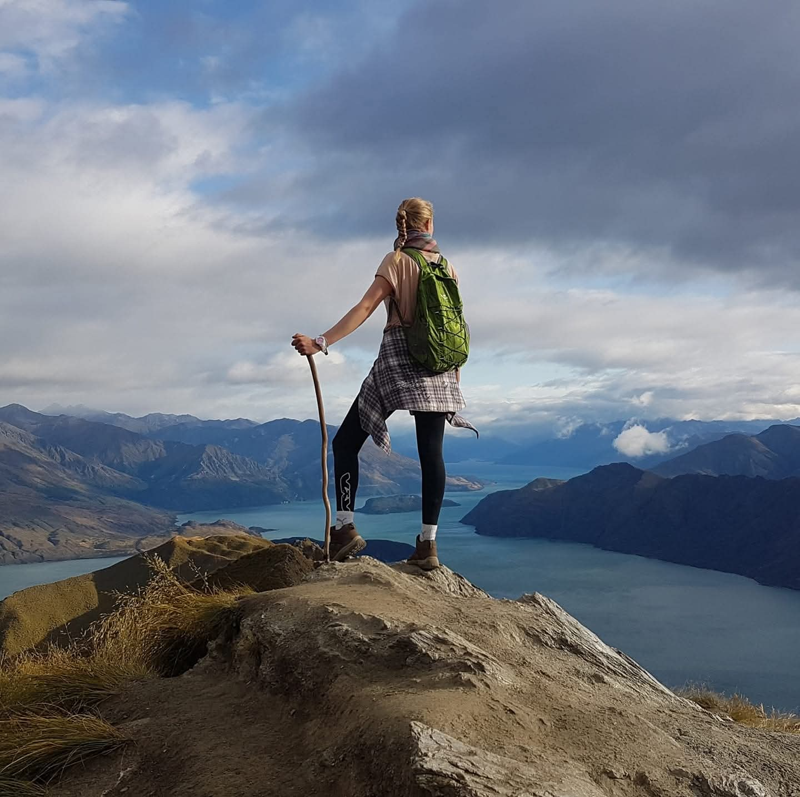
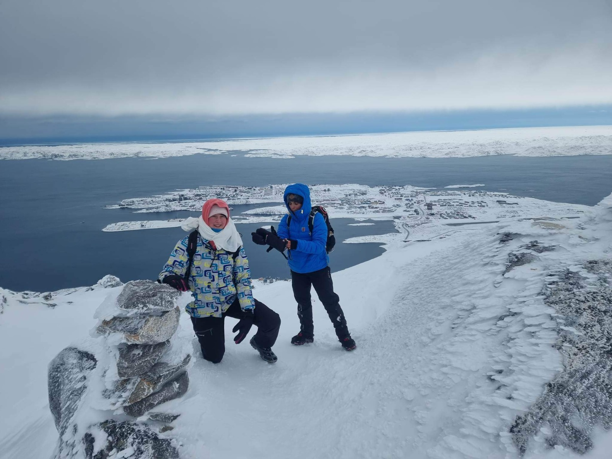

Sport & Outdoor
Nicht nur Hobbys, sondern ein Spiegelbild eines teamorientierten, körperlich engagierten und herausforderungsbereiten Mindsets.

Feldhockey
Fast zwei Jahrzehnte Hingabe zum Feldhockey, einschließlich der Auswahl für das Rheinland-Pfalz-Saar-Landesteam (2010–2016) und des Spielens auf Bundesliganiveau beim Bremer HC. Diese Erfahrung vermittelte ein tiefes Verständnis für Teamdynamik, Disziplin und strategische Entscheidungsfindung unter Druck. Hockey bleibt meine Sportart der Wahl. Die Kombination aus technischem Können, taktischem Bewusstsein und schneller Teamarbeit ist mein Element.

Kampfsport: Jujutsu Do & Combat Karate
Training auf Grüngurt Niveau in beiden Disziplinen und Sempai-Titel im Jujutso-Do. Für mich geht es im Kampfsport um Effektivität und mentale Disziplin: das Verständnis der Mechanik der Selbstverteidigung, den Aufbau von Resilienz und den Respekt vor der Praxis und denen, die neben einem trainieren. Es ist kontinuierliche Arbeit, kein Ziel.

Wandern & Outdoors
Die Natur ist der Ort, an dem Resilienz auf die Probe gestellt wird. Meine Aktivitäten reichen von ausgedehnten Wanderungen in Neuseeland und den rauen Landschaften Grönlands bis hin zum Erklimmen der Vulkane Ruandas. Ich bin Mitgründerin der Wandergruppe Beyond the Hills in Kigali, die Outdoor-Erlebnisse sowie Community-Building ermöglicht. In Ruanda habe ich mich zudem über meine Komfortzone hinaus gefordert, indem ich den Kigali Peace Marathon 2026 gelaufen bin. Es ist nicht meine natürliche Distanz, aber eine Erinnerung daran, dass Wachstum oft aus dem Testen unbekannter Grenzen entsteht.

